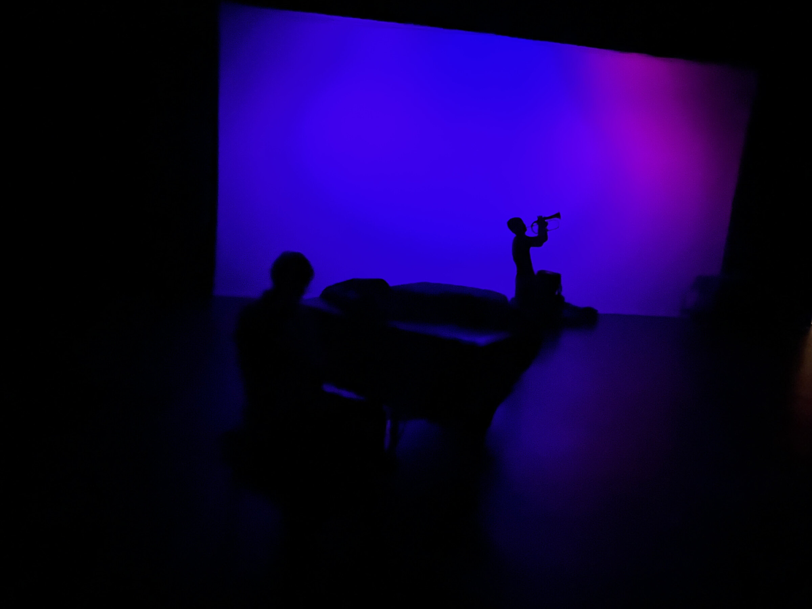
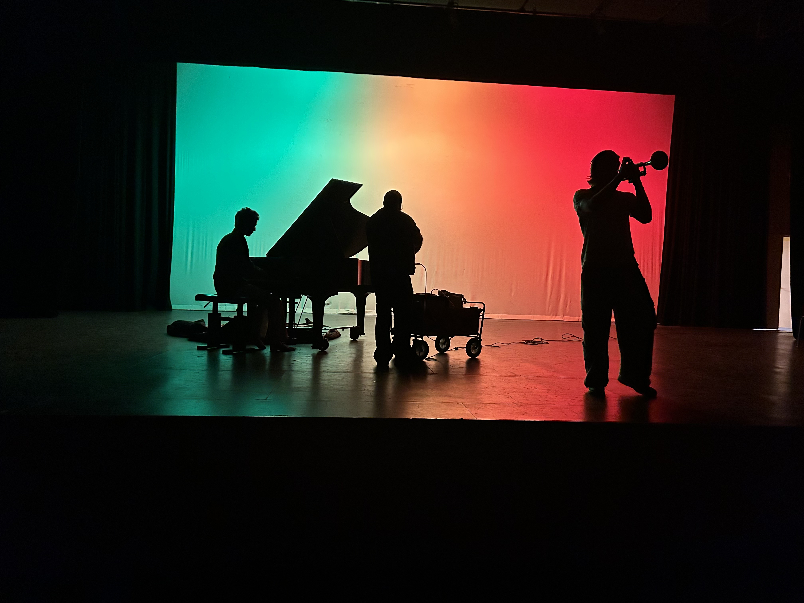
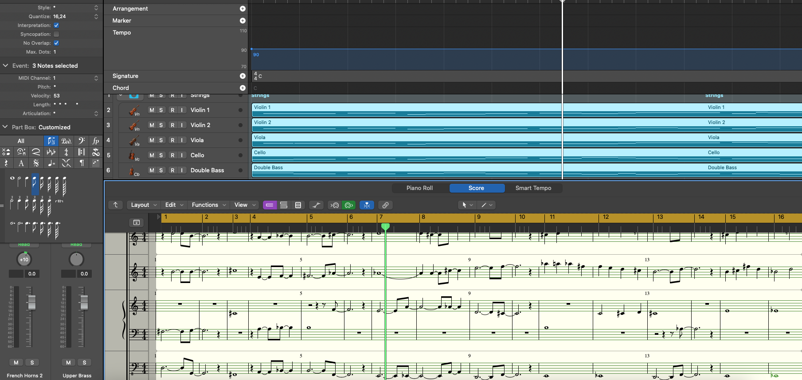
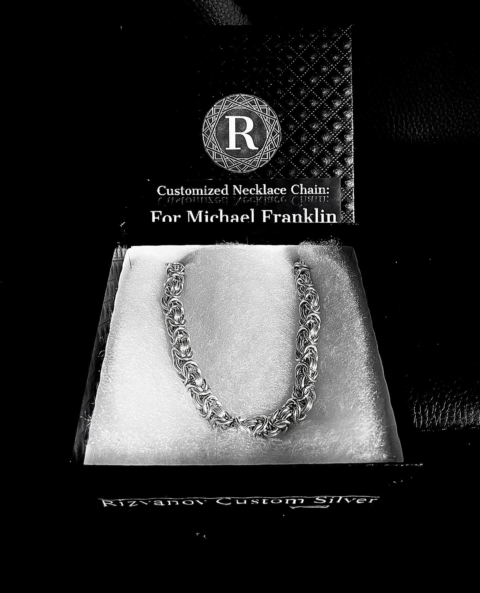
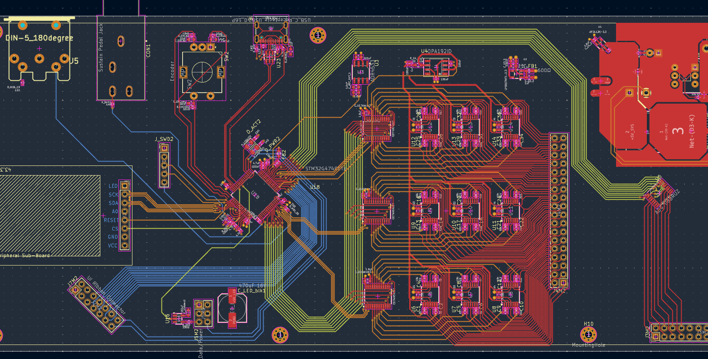
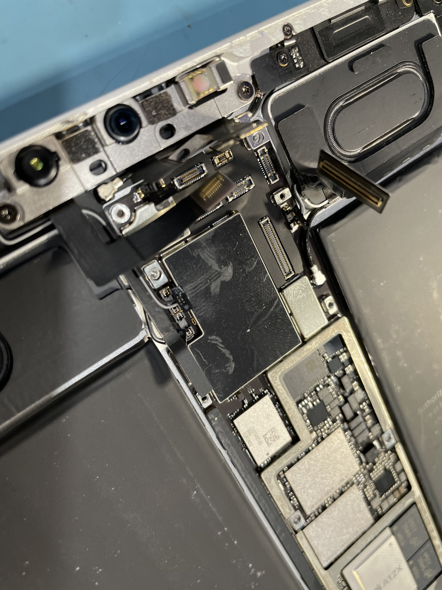

Anton Fanisovich Rizvanov
Anton Fanisovich Rizvanov is a multidisciplinary creator bridging the worlds of acoustic art and hardware engineering. As a Professional Jazz Trumpet Player, Composer, and Music Producer, he crafts complex auditory experiences. As an Electronic Engineer, PCB Designer, and Jewelry Designer, he applies that same meticulous attention to detail to the physical world. His work is defined by a singular philosophy: every discipline is a synthesis of art and precision.


Engineering
Hardware design, prototyping and test documentation: two original MIDI instruments taken from breadboard prototypes to multi-board PCB designs in KiCad, and a written component characterization report.
- TINI, a pressure-sensitive Tonnetz grid instrument
- TIMS, a MIDI instrument that plays like a trumpet
- Characterization report for an undocumented 5-pin switch
Jazz Trumpet
Rooted in improvisation and dynamic expression, his approach to the trumpet balances technical mastery with deep emotional resonance. Whether leading an ensemble or operating as a session player, Anton brings decades of focused study and live stage experience to every performance.
View jazz trumpet work
Music Production
His workflow blends the organic feel of acoustic tracking with advanced digital sequencing. Utilizing tools like Logic Pro on a MacBook, Anton seamlessly routes and processes complex MIDI data, sequences multi-layered tracks, and mixes audio with the ear of a trained composer and the technical precision of an engineer.
View music production workWorld Beneath Your Feet (Solo)
Cut Time Push (Solo)
Uneasy: Part II
Classical Composition
Drawing on deep foundational theory, Anton writes and arranges complex chamber and orchestral works. His compositions reflect a rigorous understanding of voice leading, harmony, and orchestration, bringing structured beauty to the page before it ever reaches the stage.
Once Upon a December (Reharmonization)

Jewelry Design
Transitioning precision from the circuit board to precious metals, he designs and constructs bespoke jewelry. Specializing in handcrafted custom chains, every link is formed with meticulous attention to structural integrity, weight, and aesthetic brilliance.
View jewelry work
PCB Design & Hardware
From initial KiCad and EasyEDA schematic layouts to routing dense circuit boards for manufacturing, he specializes in custom hardware engineering. His passion lies in designing custom electronic musical instruments—including complex multi-layered Tonnetz Grid MIDI controllers featuring overlapping 12x8 FSR matrices and integrated SK6812 LEDs, as well as compact matrixed macro keyboards utilizing ESP32-S2 microcontrollers.

Certified Repair Tech
Anton is a fully certified repair technician for Apple, Samsung, and Google devices. Utilizing micro-soldering, precision teardowns, and deep diagnostic software, he restores advanced consumer electronics to factory-perfect conditions. Fast turnarounds and uncompromising standards define his workbench.
View repair work
Contact
For booking inquiries, jewelry commissions, custom hardware requests, or device repair, please reach out directly.